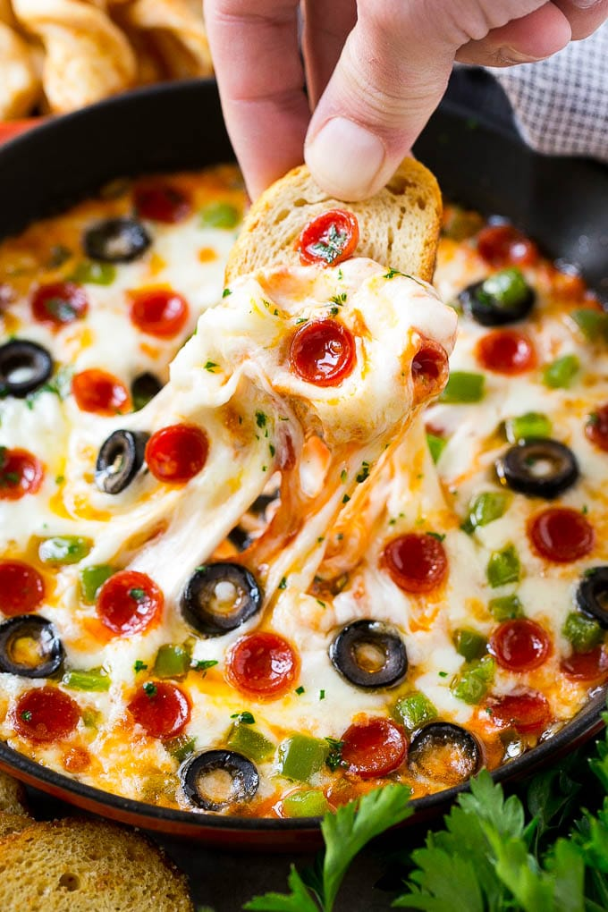

Pizza Dip

Description
A gooey, cheesy pizza dip that is the perfect companion to any party you attend.
Ingredients:
- 8 ounces softened cream cheese
- 1.5 teaspoons Italian seasoning
- .25 teaspoons garlic powder
- 1 cup pizza sauce
- 2 cups shreeded mozzarella cheese
- .5 cup mini pepperoni
- .25 cup sliced olives
- .25 cup green bell peppers (finely diced)
- 1 tablespoon chopped parsley
Instructions:
- Preheat the oven to 400 degrees F. Coat a 6 or 8 inch baking dish or skillet with cooking spray.
- Place the cream cheese in a bowl and add the Italian seasoning and garlic powder.
- Spread the cream cheese in an even layer on the bottom of the prepared dish.
- Spread the pizza sauce on top of the cream cheese.
- Add the mozzarella cheese and arrange the pepperoni, olives, and bell pepper to the top.
- Bake for 15 minutes or until cheese is melted.
- Sprinkle with parsley and serve.